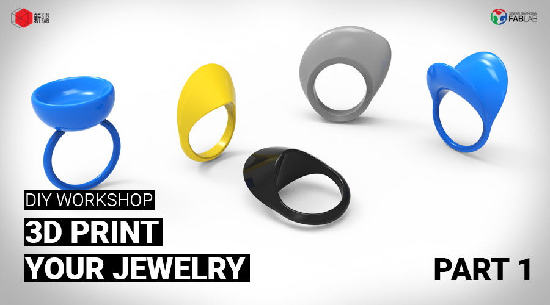
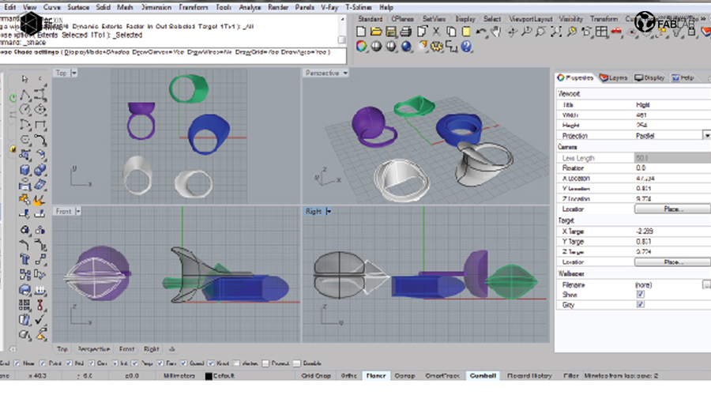
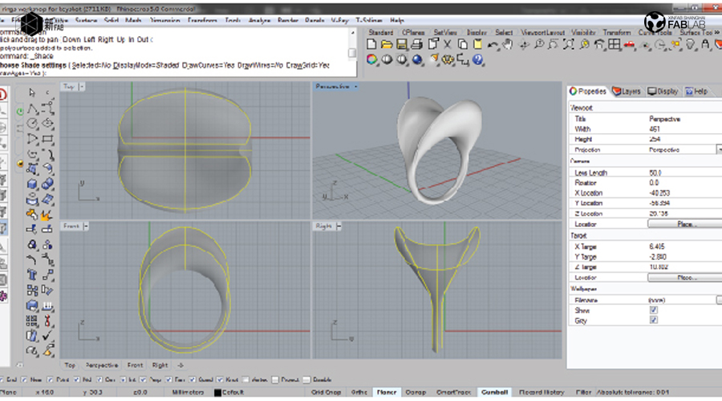
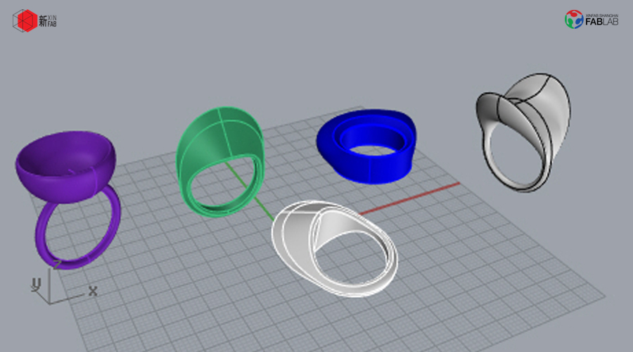

WORKSHOP
3D PRINT YOUR JEWELRY (PART 1: RHINO 3D INTRO)| 3D打印您的首饰 (第1部分：RHINO 3D 介绍） - ENGLISH ONLY

***THIS IS PART ONE OF A TWO-PART WORKSHOP. During part one, you will learn basic tools to create a ring with Rhinoceros 3D. During part two, you will learn how to 3D print your model. You can choose to join both or either***
When:Saturday, June 3, from 10am to 2pm (Part 2 will be held the following Saturday, June 10)
Where: Xinfab - 665,Changhua Road, Jing'an District, Shanghai (DT Space)
Price: 200 RMB (4 hours workshop - Part One)
Join jewelry designer and digital fabrication enthusiast Pamela to learn how to create a 3D model of a ring (Part 1) and then get to print it yourself (Part 2).
During Part 1, you will get an overall and basic view of what Rhinoceros 3D software is, and with this basic knowledge, Pamela will show you how to build your own 3D ring, based on her design.
No previous knowledge is needed, but if you are already a bit more skilled you can modify Pamela's design to your taste or even create your very own design.
At the end of Part 2, you will bring home a ring or two 3d printed rings, depending on the workshop speed and number of participants. You will know how to use the basic tools and navigate through Rhinoceros 3D, how to use CURA and set up the 3D printers at Xinfab for your future 3D prints.
Things you should bring:
// Your laptop and charger
// Mouse (you’ll have a hard time without one)
// Install Rhinoceros 3d in your laptop (Windows recommended - Trial version is OK) (https://www.rhino3d.com/)
// Your passion, curiosity, and questions



WORKSHOP SCHEDULE
// STEP 1: Intro to Rhinoceros 3D
// STEP 2: Software applications
// STEP 3: Overall view of Rhinoceros interface and how to navigate through the software
// STEP 4: Learn the basic modeling tools to create a solid model and a 2D dimensional model
// STEP 5: Practice the commands to build your own ring!
///////////////////////////////////
HOW TO SIGN UP
// Alipay
Transfer the workshop fee to pay@xinfab.com (please indicate your phone number on the payment details so we can contact you!)
Questions? Can't pay via Alipay? Send an email to info@xinfab.com.
///////////////////////////////////
ABOUT THE TEACHER

Pamela Martello is a Mexican jewelry designer who has been creating original and stylish designs in Shanghai for the past 4 years. Jewelry is Pamela's true love, but she is always experimenting in other fields related to design where she finds inspiration for her creations – digital fabrication is no exception. For Pamela, travelling, exploring, and living in different places offers a constant stream of stimulus for new ideas (plus a little fantasy too).